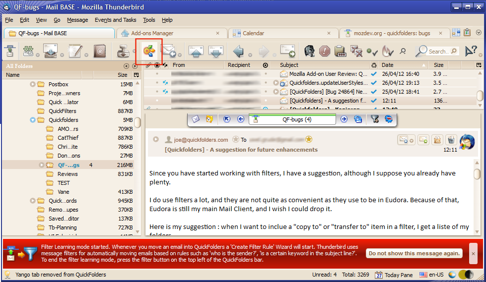
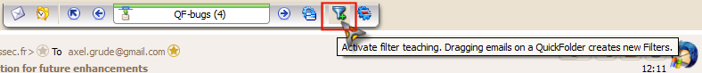
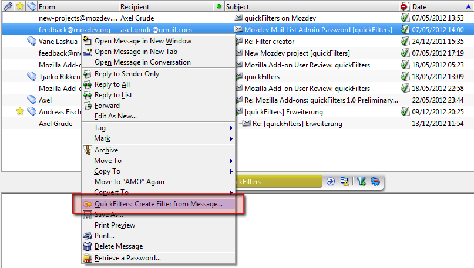
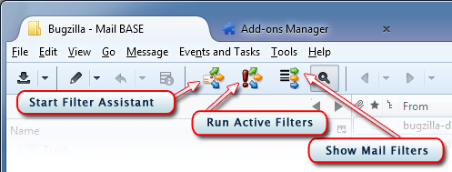
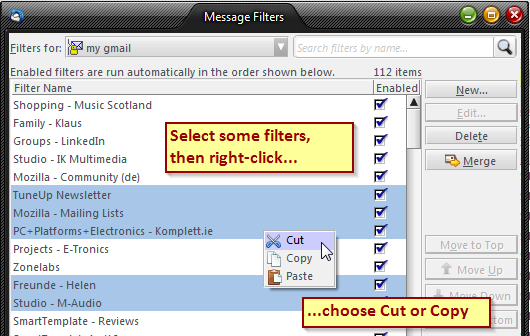
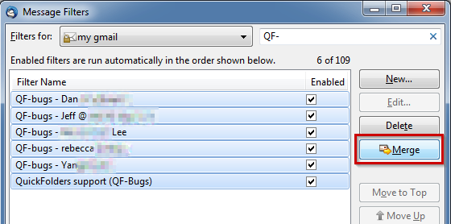
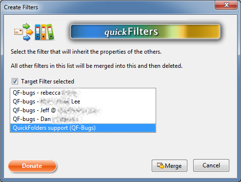
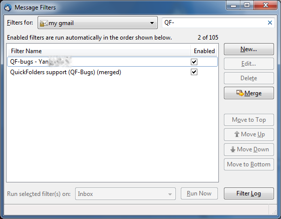

quickfilters
| Home Installation + Source Code Version History Support quickFilters! Premium Features Bugs Screenshots FiltaQuilla FiltaQuilla History Privacy Statement + Impressum |
quickFilters :: Screenshots
- Main quickFilters interface
- 
- Filter Assistant
-


quickFilters yet most powerful productivity feature: With the new Filter Teach mode, creating filters becomes as easy as drag + click. Turn on and start dragging your emails into quickFilters, the wizard takes care of the rest. Here is a detailed explanation.
- Context Menu
-

Creating a filter from an email that is already in its destination folder, by right-clicking it.
- Toolbar Buttons
-

Filter Assistant mode will monitor all manual file movements.
- Filter List enhancements
-

We added a handy Search Box and Move to Top / Move to Bottom buttons
- Options
-

For a detailed description of all options on this page, please got to the quickFilters Home Page.
- Support
-

From here, you can jump to the support pages, donate money or contact me via Email.
- Clipboard Support
-

With the context menu, filters can be copied or moved to other mail accounts.
- Merging Filters
-


With the context menu, filters can be copied or moved to other mail accounts. The assistant will also leave out filters that do not match the main action of the merged filter.